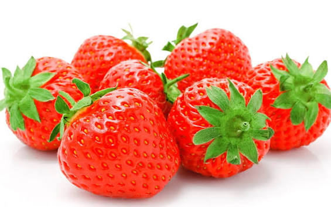
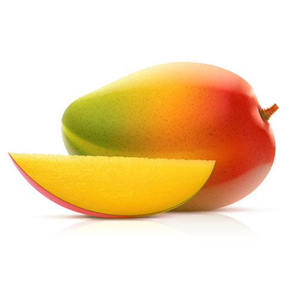
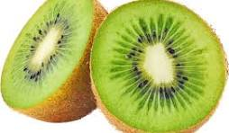
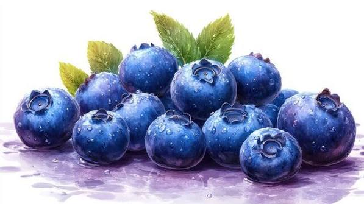

Natures sweetest gifts delivered fresh to you
StrawberriesStrawberries are bright red, juicy, and sweet. They are an excellent source of vitamin C and manganese, and also contain decent amounts of folate and potassium. They are rich in antioxidants which have benefits for heart health. |
 |
ApplesApple are incredibly nutritious fruits that offer multiple health benefits. They are high in fiber and vitamin C, and they contai polyphenols, which may have numerous health benefits. They are perfect for a healthy daily snack. |
|
MangoesMangoes are sweet, tropical fry uits know as the king of fruits. They are packed with essential nutrients, especially vitamin A and vitamin C, Which support immune function and eye health. Their rich flavor is loved worldwide. |
 |
KiwisKiwis are small fruits that pack a lot of flavor and plenty of health benefits. Their green flesh is sweet and tangy. It is full of nutrients like vitamin C, vitamin K, vitamin E, potassium, and folate, making it highly refreshing. |
 |
OrangesOrange are amonge the world`s most popular fruits. They are a healthy source of fiber, vitamin C, thiamine, folate, and antioxidants. They support skin health, boost the immune system, and offer a burst of natural energy. |
BlueberriesBlueberries are small, round, and deeply colored berries that are packed with nutrients. They are widely considered a superfood because they contain of the highest antioxidant levels among all common fruits and vegetables. |
 |